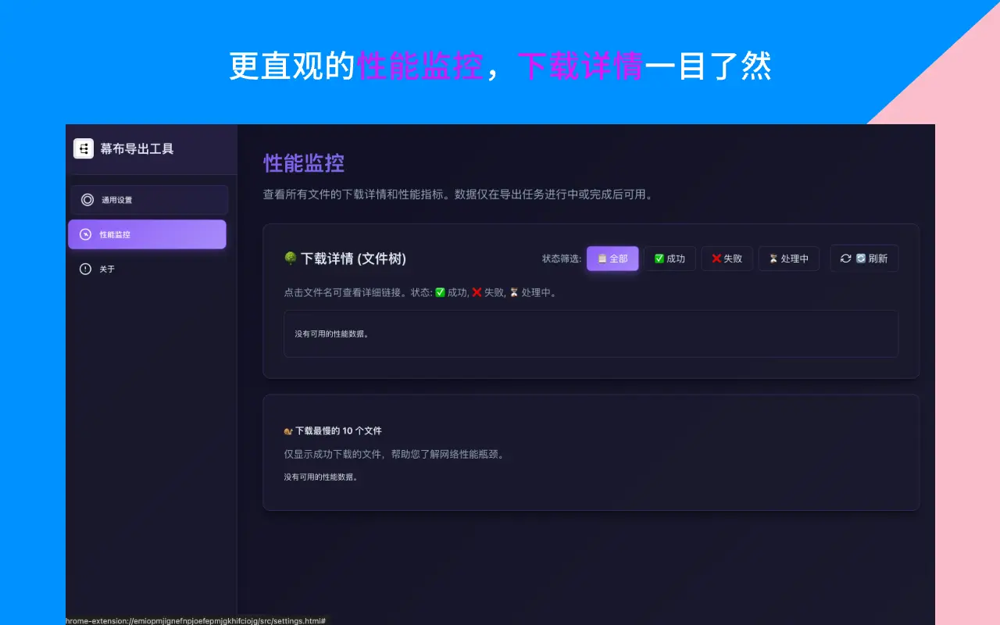
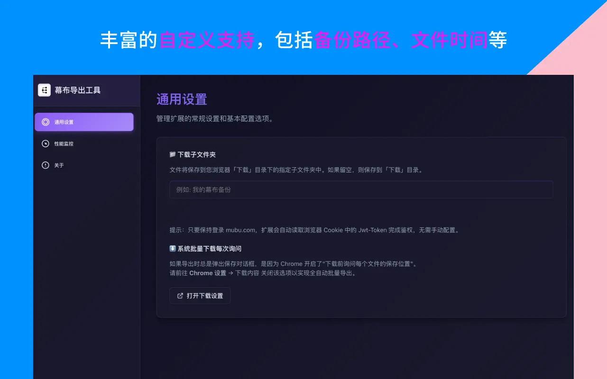

各位好，我是老周，一个做了六年产品经理的人。
上个月发生了一件事，让我后背发凉——组里一个小伙子，用了两年多的某云笔记突然登不上了。起初以为是密码错了，后来发现是账号被误封（据说触发了什么安全策略）。申诉了一周，最后恢复的时候，近半年的笔记全没了。
两年积累的竞品分析、用户访谈记录、迭代复盘……就这么蒸发了一大半。
看着他在工位上呆坐的样子，我当天晚上就把自己幕布里的所有笔记做了一次本地备份。
TL;DR：云笔记面临账号封禁、同步冲突、服务关停和误操作四大风险。建议遵循 3-2-1 备份原则，每月用 Mubu Exporter 做一次全量导出（Markdown + JSON 双格式），存储在本地 + 远程两个位置。整个操作仅需 5 分钟。
你的云笔记真的安全吗？
我知道很多人觉得「数据在云端 = 安全」。但现实是，云笔记面临的风险比你想象的多：
风险一：账号问题
账号被盗、被误封、手机号注销导致无法登录……这些每天都在发生。大部分云服务的申诉流程漫长且不保证恢复完整数据。
风险二：同步冲突导致数据覆盖
多设备同时编辑一篇文档时，如果同步机制出了问题，可能会用旧版本覆盖新版本。等你发现的时候，最新修改已经永久丢失。
风险三：服务调整或关停
根据 Statista 的云存储行业报告，全球每年约有 2-5% 的云服务发生策略调整或费用变更。还记得有道云笔记的免费空间缩减吗？还有更早的为知笔记改收费模式、Leanote 停止维护……互联网产品没有「永远」这回事。今天好好的服务，明天可能就调整策略，后天可能就关停了。
风险四：误操作
最常见的其实是自己手贱——不小心删了文件夹、清空了回收站。幕布的回收站有保留期限，超时后就真的找不回来了。
这些风险里，哪怕只遇上一次，损失的就是你几年的知识积累。而避免它们的方法只有一个：在本地保留一份独立的备份。
我是怎么被「逼」出备份习惯的？
看了同事的惨痛教训后，我给自己定了一套简单的备份规则：
- 每月 1 号：做一次幕布全量导出
- 导出两种格式：Markdown（日常用）+ JSON（完整备份）
- 存三个地方：电脑本地、移动硬盘、私有 Git 仓库
听起来好像很麻烦？实际上每次操作不超过 5 分钟。因为有了称手的工具，整个流程就是点几下鼠标的事。
每月 5 分钟的备份工作流怎么做？

工具准备（只需做一次）
- 安装 Mubu Exporter 插件（Chrome 应用商店搜索「幕布导出工具」）
- 在电脑上建一个固定的备份目录，比如
~/Documents/mubu-backup/ - （可选）初始化一个 Git 仓库用来做版本追溯
每月备份操作
- 打开 mubu.com 确认已登录
- 点击插件图标 → 获取文件信息（自动扫描所有文档）
- 选择 Markdown 格式 → 开始导出 → 等待完成（通常 5-10 分钟）
- 再选 JSON 格式 → 开始导出 → 等待完成
- 把导出的 ZIP 解压到备份目录的当月文件夹下

如果配了 Git，最后再执行：
git add .git commit -m "2025年1月备份"git push
整套流程真正需要我「动脑子」的时间是零。因为步骤固定，我甚至在日历里设了提醒，每月 1 号弹窗：「备份幕布」。
为什么选 Mubu Exporter 做备份工具？
做备份的工具需要满足几个硬性条件，我对比了一圈后选了它：
| 备份工具要求 | Mubu Exporter 表现 |
|---|---|
| 能全量导出（不遗漏） | ✅ 自动递归所有文件夹 |
| 保留文件夹结构 | ✅ 导出后目录层级与幕布一致 |
| 数据不经过第三方 | ✅ 纯本地执行，API → 本地磁盘 |
| 失败可重试 | ✅ 单篇失败不影响整体，一键重试 |
| 多格式支持 | ✅ Markdown + JSON 双保险 |
| 操作简单 | ✅ 三次点击完成 |

特别是「数据不经过第三方」这一点。做备份本身就是为了安全，如果备份工具还需要把数据传到别人的服务器上，那就本末倒置了。Mubu Exporter 是开源的，代码可审计，数据直接从幕布 API 到你的本地硬盘，全程不碰第三方。
什么是 3-2-1 备份原则？
IT 行业有个经典的「3-2-1 备份原则」（最早由摄影师 Peter Krogh 提出，后被 美国网络安全和基础设施安全局 CISA 作为数据保护标准推荐），用在笔记备份上同样合适：
- 3 份数据：幕布云端（原始）+ 电脑本地 + 远程仓库/网盘
- 2 种介质：云端存储 + 本地磁盘（SSD/硬盘）
- 1 份异地：至少一份备份存在物理上不同的位置（比如 Git 远程仓库或移动硬盘放家里）
如果你嫌三份太麻烦，至少做到「幕布云端 + 电脑本地」两份。因为云端和本地同时出问题的概率极低。
多久备份一次比较合适？
| 使用频率 | 笔记数量 | 建议备份频率 |
|---|---|---|
| 每天都用 | 200+ 篇 | 每周一次 |
| 每周几次 | 50-200 篇 | 每月一次 |
| 偶尔使用 | 50 篇以下 | 每季度一次 |
| 重要项目期 | 任意数量 | 项目结束时立即备份 |
我的建议是：别等到「准备换工具」的时候才想起备份。那时候往往已经来不及了。养成习惯，把备份变成像刷牙一样的日常——不需要理由，到时间就做。
如果数据已经丢了怎么办？
如果你是在数据出问题之后才看到这篇文章，这里有几条紧急建议：
- 检查幕布回收站——删除的文档会在回收站保留一段时间
- 联系幕布客服——说明情况，看看能否从后台恢复
- 检查浏览器缓存——极少数情况下本地缓存里可能还有部分数据
- 以后做好备份——亡羊补牢。现在就装上备份工具，别让同样的事情发生第二次。具体怎么操作，可以参考这位用户的实操经历
写在最后
我经常跟团队说一句话：备份不是因为不信任工具，而是对自己的知识资产负责。
你在幕布里积累了多少读书笔记、会议纪要、项目复盘、学习资料？这些东西的价值远不止几百个小时的时间成本——它们是你思维的结晶，是你的竞争力。
花 5 分钟做一次备份，就是给这些无价的知识资产上一份保险。这笔交易怎么算都划算。如果你还不了解具体的导出操作，可以看看幕布导出 Markdown 完整指南，5 步搞定。
相关链接：
- Mubu Exporter 插件：Chrome 应用商店
- 开源地址：GitHub